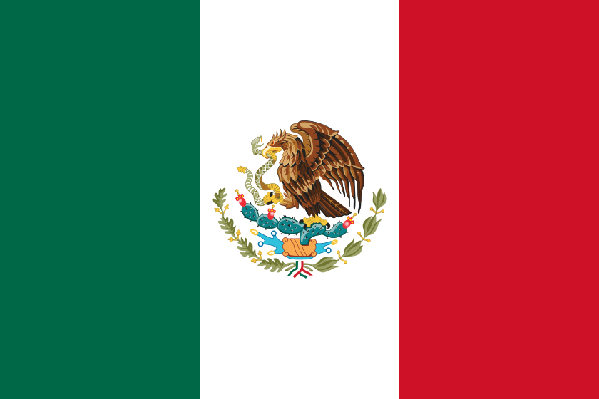

Barrio Uno - Mundial 2026
- GRUPO A -
México

Sudáfrica

Corea del Sur

República Checa

| País | Horarios | Estadios | Ciudades | Historia | Estadísticas | Curiosidades |
|---|---|---|---|---|---|---|
| México | 11-jun-2026 vs Sudáfrica (13:00 MX); 18-jun-2026 vs Corea del Sur (19:00 MX); 24-jun-2026 vs Rep. Checa (19:00 MX). | Estadio Azteca, Estadio Akron, Estadio Azteca | Ciudad de México, Guadalajara, Ciudad de México | Coanfitrión del Mundial 2026. Tercer país en albergar el torneo por tercera vez. | 17 participaciones; mejor resultado: cuartos de final (1970 y 1986). | Es el único país de CONCACAF en alcanzar los cuartos de final de un Mundial. |
| Sudáfrica | 11-jun-2026 vs México (13:00 MX); 18-jun-2026 vs Rep. Checa (10:00 MX); 24-jun-2026 vs Corea del Sur (19:00 MX). | Estadio Azteca, Mercedes-Benz Stadium, Estadio BBVA | Ciudad de México, Atlanta, Monterrey | Primer país africano en organizar un Mundial (2010). Regresa al torneo en 2026. | 3 participaciones; mejor resultado: fase de grupos (2010). | En 2010 fue el primer Mundial organizado en África y contó con la vuvuzela como símbolo. |
| Corea del Sur | 11-jun-2026 vs Rep. Checa (20:00 MX); 18-jun-2026 vs México (19:00 MX); 24-jun-2026 vs Sudáfrica (19:00 MX). | Estadio Akron, Estadio Akron, Estadio BBVA | Guadalajara, Guadalajara, Monterrey | Coorganizador del Mundial 2002, donde alcanzó las semifinales. | 11 participaciones; mejor resultado: semifinales (2002). | En 2002 eliminó a Italia y España en el mismo torneo, siendo la mayor sorpresa mundialista. |
| República Checa | 11-jun-2026 vs Corea del Sur (20:00 MX); 18-jun-2026 vs Sudáfrica (10:00 MX); 24-jun-2026 vs México (19:00 MX). | Estadio Akron, Mercedes-Benz Stadium, Estadio Azteca | Guadalajara, Atlanta, Ciudad de México | Regresa al Mundial tras su participación en 2006. Checoslovaquia llegó a ser finalista en 1934 y 1962. | 2 participaciones como Rep. Checa; mejor resultado: cuartos de final (2004, Eurocopa). | Su heredera histórica, Checoslovaquia, fue subcampeona mundial en 1934 y 1962. |